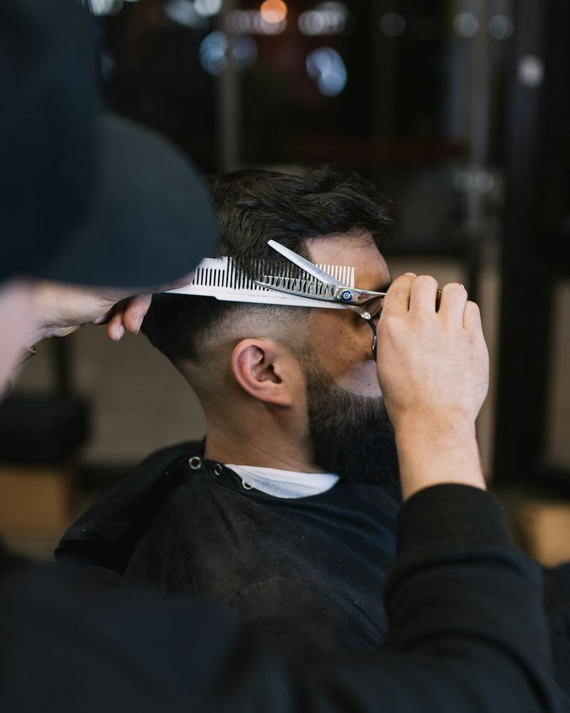
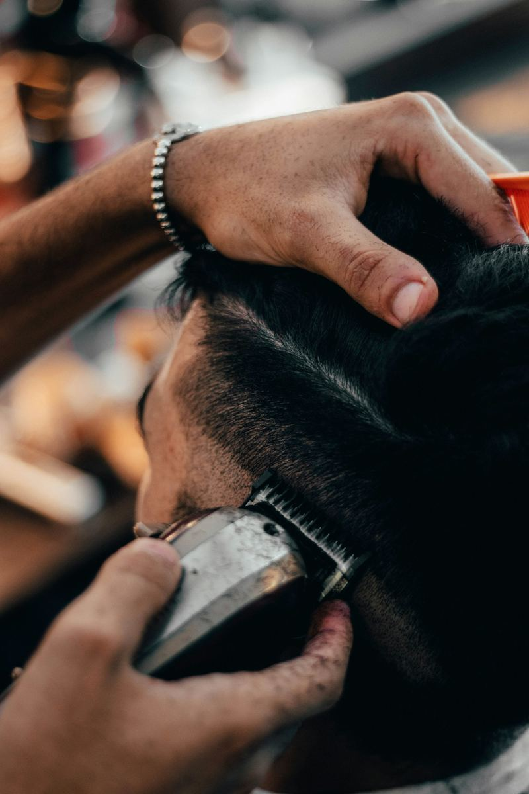
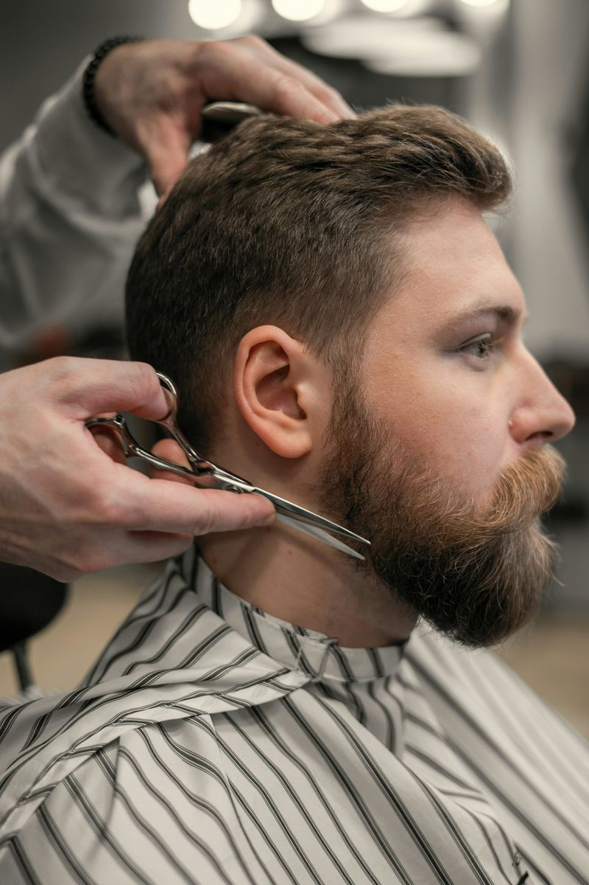
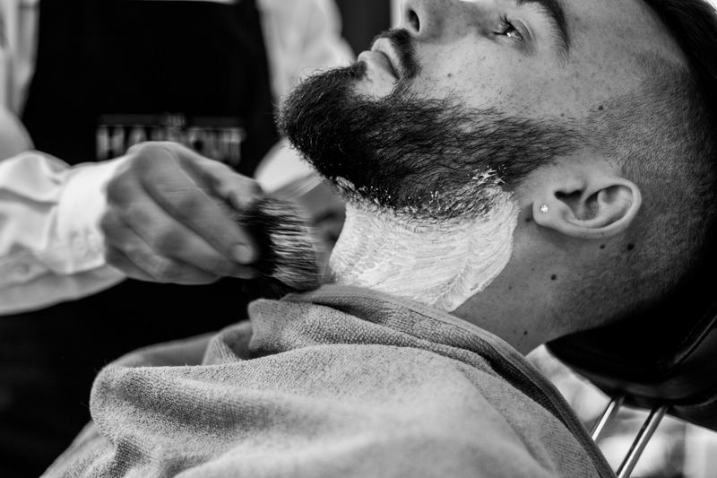
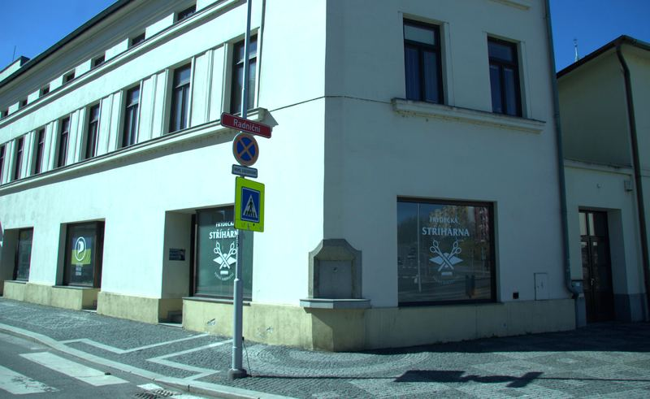

Pánský střih bez objednání
Klasické i moderní střihy a úprava vousů v Radniční 10 ve Frýdku. Nemusíte volat předem. Přijďte, posaďte se a počkejte, až na Vás přijde řada.
Po–pá 8–18 hodin
Frýdecká
Stříhárna
pánské kadeřnictví
Dnes stříháme do 18:00
Otevřeno máme v pracovní dny od 8 do 18 hodin. Přijít můžete kdykoli během té doby.
- PřijdeteKdykoli v otevírací době, bez volání a bez rezervace.
- Počkáte na řaduPosadíte se a počkáte, až dostříháme zákazníka před Vámi.
- Ostříháme VásStřih, vousy nebo obojí. Platí se na místě v hotovosti.
Klasika, fade i vousy
Stříháme nůžkami i strojkem, upravujeme vousy. Fotky našich střihů najdete na Instagramu.





Kde nás najdete
Radniční 10, 738 01 Frýdek-Místek
- Otevřeno
- po–pá 8:00–18:00
- Telefon
- 732 622 831
- Platba
- jen v hotovosti
Přijít můžete i s dětmi. Novinky dáváme na Facebook a Instagram.